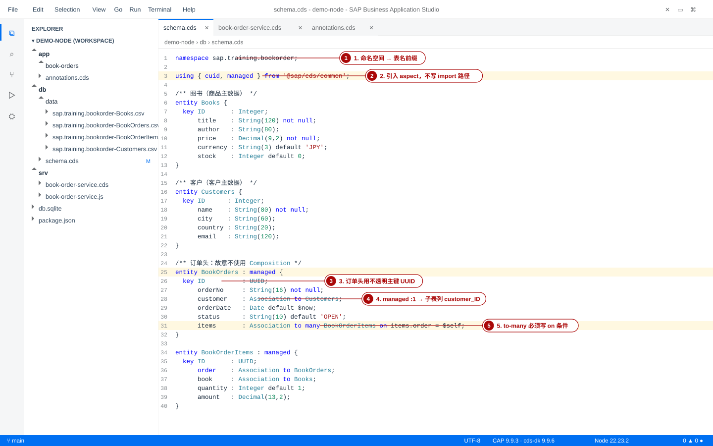
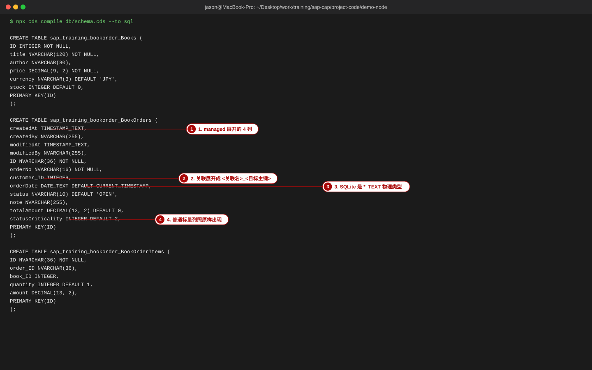
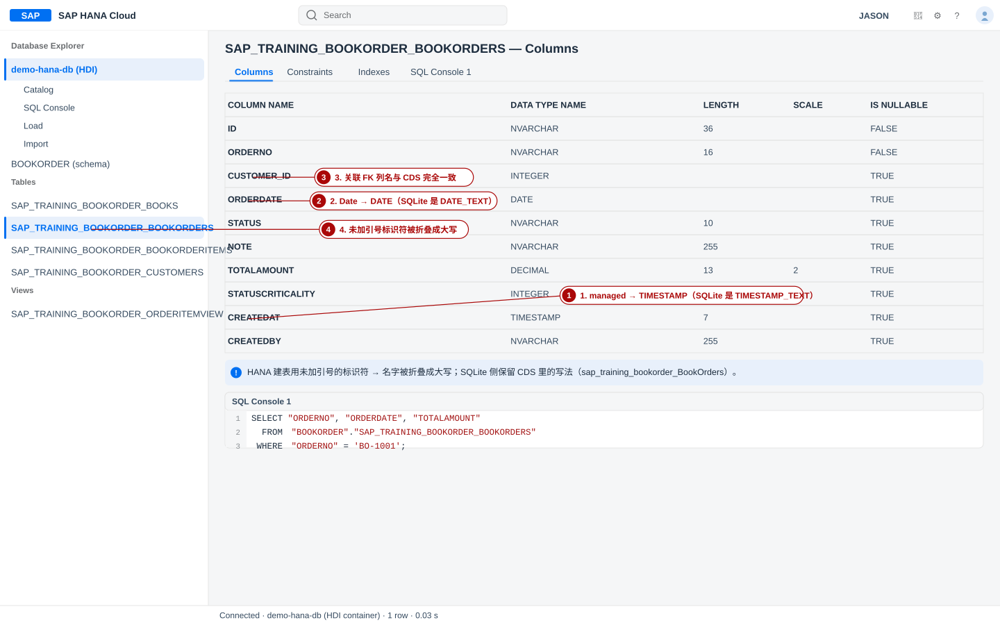
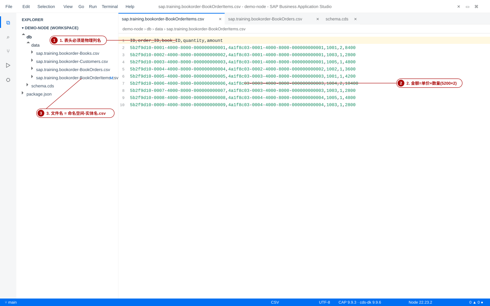
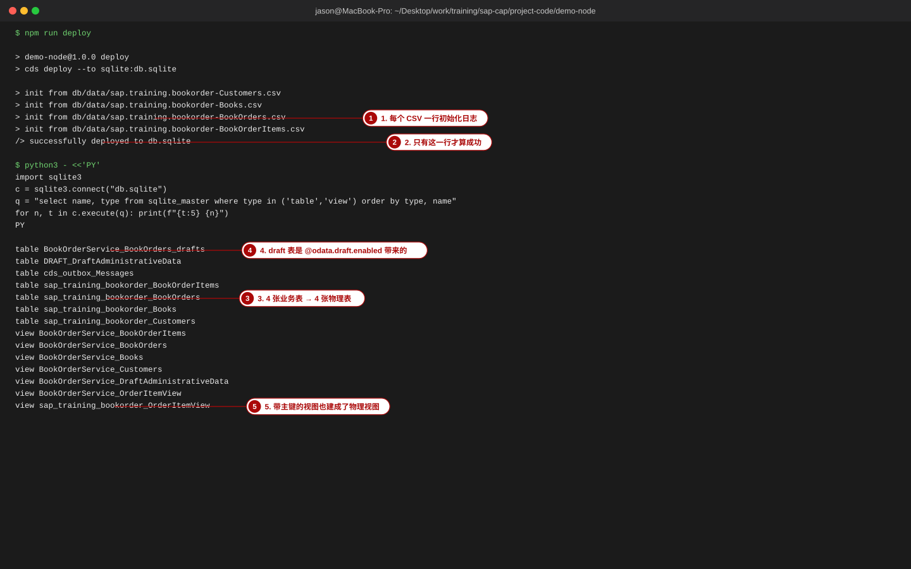
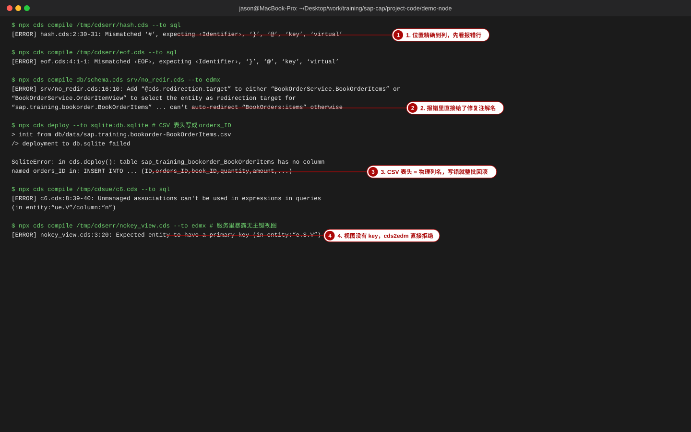

④ CDS 建模 —— 从领域模型到数据库
本页交出「模型层」：db/schema.cds · srv/*.cds · app/*/annotations.cds 三种文件的分工，cds compile 的四条产出（sql / hdbtable / edmx / csn），类型与物理列的对照，Association 与 Composition 的实测差异，以及 CSV 种子数据把整个 deploy 打回去的几种真实报错。
- 拿到任意一份
.cds，说清它会建出哪些表、哪些列、哪些视图，并亲手用cds compile --to sql核对。 - 知道
key ID : UUID、managed、cuid、localized各自展开成什么物理列（本页全部给出实测 DDL）。 - 能解释为什么本站示范项目在
BookOrders与BookOrderItems之间故意用 Association 而不是 Composition，并知道 Composition 真正的坑在哪里。 - 能自己排查 CSV 初始化失败：看懂
no column named …/UNIQUE constraint failed/NOT NULL constraint failed三类报错，并用python3查sqlite_master自证。 - 遇到「Mismatched #」「Can't auto-redirect」「Expected entity to have a primary key」不再靠猜——本页第 10 节是 16 行现象→原因→对策表。
- 凡标注「本地实测」的代码块，都是在
project-code/demo-node里执行下面这条命令的真实输出，未做手工改写（除明确标注「已缩略路径/长行」的地方）：
export PATH="$(dirname "$(npx -y node@22 -p process.execPath)"):$PATH" && npx cds compile … - 本机实测版本：Node.js 22.23.2 · @sap/cds-dk 9.9.6 · @sap/cds 9.9.3 · @sap/cds-compiler 6.9.5 · @cap-js/sqlite 2.4.3。
- 带 ~ 前缀的说法表示本站未在本地验证（多与 HANA 云端行为、版本差异有关），已给出官方文档位置，请在自己环境核对。
0. 本页地图与分工
整套课程里「模型」这件事被切成三块讲，避免同一段代码在三页里重复。先明确边界，再开始建模：
| 页面 | 负责的层 | 你会看到的东西 | 不在这里讲 |
|---|---|---|---|
| 概念 | CAP 三层架构总览 | model / service / UI 三层与 Node·Java 双运行时的关系 | 具体语法 |
| 本页 cds.html | 模型层（.cds 文件与编译产物） | db/schema.cds、srv/*.cds 的定义写法、类型与物理列、关联、视图、注解、CSV 种子数据、编译到 SQL/EDMX 的结果 | 业务逻辑代码、UI 注解细节、部署与权限 |
| ⑤ Node 服务 | Node.js 运行时 | service 实现类、SELECT/INSERT/UPDATE、req.reject、函数与绑定动作的 .js 实现、cds watch 调试 | 模型文件怎么写 |
| ⑥ Java 服务 | CAP Java 运行时 | 同一份 .cds 在 Maven 工程里的位置、@Service 与 EventContext、Spring 集成 | CDS 语法（与 Node 共用本页） |
| ⑦ 测试 | 验证层 | 单元测试、OData 契约测试、test/odata-verify.sh 怎么读 | 编译期报错的含义（本页第 10 节） |
| ⑨ Fiori UI | UI 注解层 | UI.LineItem、UI.FieldGroup、UI.Facets 怎么写、Fiori Elements 怎么用 | 非 UI 注解（本页第 8 节） |
| ⑧ 权限 | 授权层 | XSUAA、角色集合、@requires/@restrict 的完整用法 | 注解语法本身（本页第 8 节给最小用法） |
| ⑩ 部署 | 运行环境 | MTA、cf deploy、HDI 容器与部署后验证 | CSV 种子数据规则（本页第 9 节） |
module.exports = class … 开头、this.on(...) 结尾的代码都去 ⑤ Node 服务；任何以 annotate service.X with @(UI.… 开头、只影响界面的注解都去 ⑨ Fiori UI。
0-1 本页地图（按「你要解决什么问题」索引）
- 不知道
.cds文件该放哪、编译出什么 → 第 1 节（含真实cds compile输出与画面cds_s02）。 - 要选字段类型、关心「写进数据库到底是什么列」→ 第 2 节（SQLite / HANA 双列对照，全部实测）。
- 纠结主键用 UUID 还是业务编号 → 第 3 节。
- 想知道
managed/cuid到底给我加了哪些列 → 第 4 节。 - 主从表用 Association 还是 Composition → 第 5 节（本页最有价值的一节，含反例）。
- 表名 / 列名为什么长这样 → 第 6 节。
- 聚合结果怎么暴露 → 第 7 节。
@readonly写哪儿、生效在哪儿 → 第 8 节。- CSV 一放就报错、顺序对不上 → 第 9 节。
- 已经报错了，要最快的现象→原因→对策 → 第 10 节。
1. CDS 是什么：三种文件、配置与编译管线
CDS（Conceptual Definition Language）不是「另一种 SQL」，它是面向实体与关联的模型语言：你声明「有哪些业务对象、它们怎么互相引用、界面怎么称呼它们」，剩下的建表语句、外键列、OData 元数据由编译器按目标（数据库方言 / OData 版本）生成。同一份模型因此能落到 SQLite、HANA、PostgreSQL，也能吐出 OData 的 $metadata。
1-1 三种文件的分工（手顺）
示范项目的目录只有三类 .cds 文件，职责完全不同——这是 CAP 里最容易被初学者混在一起的地方：
① 持久化模型（db/schema.cds）：entity … { … } 声明。它是唯一会建表的文件。
textdemo-node/ ├─ db/ │ ├─ schema.cds ← 实体与关联（建表来源） │ └─ data/ │ ├─ sap.training.bookorder-Books.csv │ ├─ sap.training.bookorder-Customers.csv │ ├─ sap.training.bookorder-BookOrders.csv │ └─ sap.training.bookorder-BookOrderItems.csv ├─ srv/ │ ├─ book-order-service.cds ← 服务定义（projection on） │ └─ book-order-service.js ← 业务逻辑（不在本页） ├─ app/book-orders/ │ └─ annotations.cds ← UI 注解（只进 $metadata） └─ package.json ← cds 配置在这里
| 文件 | 内容 | 编译产物 |
|---|---|---|
db/schema.cds | namespace / entity / type / aspect | CREATE TABLE、CREATE VIEW |
srv/*.cds | service … { entity … as projection on …; function … } | 服务级 CREATE VIEW + $metadata（EDMX） |
app/*/annotations.cds | annotate service.X with @(…) | 只进 $metadata 的 <Annotations> 段，不建任何表 |
判断方法：临时把某份文件移走再跑 cds compile --to sql——若 CREATE TABLE 的数变少，说明它是持久化模型或服务定义（服务会带出 draft 表）；若 DDL 一字不变、只有 --to edmx 的输出变了，它就是注解层。
- 确认三份文件都在：
db/schema.cds、srv/book-order-service.cds、app/book-orders/annotations.cds。bashcd ~/Desktop/work/training/sap-cap/project-code/demo-node find db srv app -name '*.cds' | sort - 验证：期望看到恰好 3 行（三份
.cds）。少任何一份，后面的--to edmx会缺少对应的 EntitySet 或注解。 - 分别编译三份文件，观察「谁建表、谁建视图、谁只影响元数据」。
bash
export PATH="$(dirname "$(npx -y node@22 -p process.execPath)"):$PATH" # 只用持久化模型 → 看「建表」 npx cds compile db/schema.cds --to sql | grep -c 'CREATE TABLE' # 实测 4 npx cds compile db/schema.cds --to sql | grep -c 'CREATE VIEW' # 实测 1（OrderItemView） # 加上服务定义 → 视图变多（projection 也是 VIEW），并多出 draft 相关表 npx cds compile db/schema.cds srv/book-order-service.cds --to sql | grep -c 'CREATE VIEW' # 实测 7 npx cds compile db/schema.cds srv/book-order-service.cds --to sql | grep -c 'CREATE TABLE' # 实测 6（4 业务表 + 2 张 draft 表） # 加上注解 → DDL 一字不变，但 $metadata 多出 Annotations 段 npx cds compile db/schema.cds srv/book-order-service.cds app/book-orders/annotations.cds --to sql | grep -c 'CREATE TABLE' # 仍是 6 npx cds compile db/schema.cds srv/book-order-service.cds app/book-orders/annotations.cds --to edmx | grep -c 'Annotations' # 实测 66 - 验证：第一条
grep -c 'CREATE TABLE'打印4；加上服务定义后变6（多了 draft 表，见第 8 节@odata.draft.enabled）；再加注解文件数量不变（注解不建表）；而--to edmx的Annotations段从「不存在」变成66条。这就是三层的分界线。 - 顺手记一个坑：只给
db/schema.cds就跑--to edmx会直接失败——实测输出Error: There are no service definitions found at all in given model(s).。EDMX 是「服务」的产物，没有service就没有$metadata。

- 能说出三个文件分别属于哪一层。
- 删掉
annotations.cds后--to sql的输出一字不变。 - 知道
db/data/*.csv不是模型，只是初始化数据（第 9 节）。
entity Books as projection on db.Books; 当成「新表」——它是 VIEW。cds compile … --to sql 里你会看到 CREATE VIEW BookOrderService_Books AS SELECT …，而不是 CREATE TABLE。想给业务表加字段，改的是 db/schema.cds，不是服务文件。1-2 配置放在哪：package.json 的 cds 段（本项目）与 .cdsrc.json
CAP 的运行时配置（数据库连哪个文件、认证怎么走）有两个可放置的地方：项目根目录的 .cdsrc.json，或 package.json 里的 "cds" 段。本站示范项目用后者，仓库里没有 .cdsrc.json（可以用 ls -a 确认）——这是 CAP 9 的推荐做法，也让 npm install 之后配置立刻可用。
json{ "name": "demo-node", "scripts": { "watch": "cds watch", "deploy": "cds deploy --to sqlite:db.sqlite", "build": "cds build --production", "lint:model": "cds compile db/schema.cds srv/book-order-service.cds --to sql" }, "cds": { "requires": { "db": { "kind": "sqlite", "credentials": { "url": "db.sqlite" } }, "auth": { "kind": "mocked" } } } }
- 确认本地用哪种数据库：
cds段的requires.db.kind = sqlite且credentials.url = db.sqlite。这就是为什么本页的 DDL 是 SQLite 方言。 - 验证：
npx cds env get requires.db打印下面这份实测输出——注意 CAP 还给db补了impl、pool、data等默认值，其中data就是扫描种子数据的目录（第 9 节会用到）：
把json{ "impl": "@cap-js/sqlite", "credentials": { "url": "db.sqlite" }, "data": [ "db/data", "db/csv", "test/data" ], "pool": { "max": 1 }, "kind": "sqlite" }kind改成hana再看这条命令，会提示缺少 hana 服务绑定——说明配置真的在生效。
cds env 的用法见官方文档 cap.cloud.sap/docs/node.js/cds-env。本课程不依赖它。1-3 编译管线：cds compile 的四个 target
cds compile <文件…> --to <target> 是模型层的「单元测试」——改完 .cds 先看它，比跑服务快得多。支持的目标（本机 npx cds compile --help 实测输出）：
text-2 | --to <target format> Currently supported: - json, yml - edm, edmx, edmx-v2, edmx-v4, edmx-w4, edmx-x4 - sql, hana, hdbtable - cdl - xsuaa - openapi - asyncapi --dialect <dialect> Specify the dialect in combination with --to sql. Currently supported: - sqlite - h2 - postgres - hana
--to csn），所有后续步骤的输入--to sql [--dialect …] → CREATE TABLE / CREATE VIEW--to hdbtable → COLUMN TABLE（HANA 部署用的 .hdbtable 内容）--to edmx → 服务的 $metadata（EntitySet + Annotations）真实命令 1 —— 看建表（本页第 2、3、4、5、6 节的全部 DDL 都来自这条命令）：
bashcd project-code/demo-node export PATH="$(dirname "$(npx -y node@22 -p process.execPath)"):$PATH" npx cds compile db/schema.cds --to sql
sqlCREATE TABLE sap_training_bookorder_Books ( ID INTEGER NOT NULL, title NVARCHAR(120) NOT NULL, author NVARCHAR(80), price DECIMAL(9, 2) NOT NULL, currency NVARCHAR(3) DEFAULT 'JPY', stock INTEGER DEFAULT 0, PRIMARY KEY(ID) ); CREATE TABLE sap_training_bookorder_Customers ( ID INTEGER NOT NULL, name NVARCHAR(80) NOT NULL, city NVARCHAR(60), country NVARCHAR(20), email NVARCHAR(120), PRIMARY KEY(ID) ); CREATE TABLE sap_training_bookorder_BookOrders ( createdAt TIMESTAMP_TEXT, createdBy NVARCHAR(255), modifiedAt TIMESTAMP_TEXT, modifiedBy NVARCHAR(255), ID NVARCHAR(36) NOT NULL, orderNo NVARCHAR(16) NOT NULL, customer_ID INTEGER, orderDate DATE_TEXT DEFAULT CURRENT_TIMESTAMP, status NVARCHAR(10) DEFAULT 'OPEN', note NVARCHAR(255), totalAmount DECIMAL(13, 2) DEFAULT 0, statusCriticality INTEGER DEFAULT 2, PRIMARY KEY(ID) ); CREATE TABLE sap_training_bookorder_BookOrderItems ( createdAt TIMESTAMP_TEXT, createdBy NVARCHAR(255), modifiedAt TIMESTAMP_TEXT, modifiedBy NVARCHAR(255), ID NVARCHAR(36) NOT NULL, order_ID NVARCHAR(36), book_ID INTEGER, quantity INTEGER DEFAULT 1, amount DECIMAL(13, 2), PRIMARY KEY(ID) ); CREATE VIEW sap_training_bookorder_OrderItemView AS SELECT BookOrderItems_0.ID, order_1.orderNo AS orderNo, order_1.orderDate AS orderDate, BookOrderItems_0.book_ID AS bookID, book_2.title AS bookTitle, book_2.price AS unitPrice, BookOrderItems_0.quantity, BookOrderItems_0.amount FROM ((sap_training_bookorder_BookOrderItems AS BookOrderItems_0 LEFT JOIN sap_training_bookorder_BookOrders AS order_1 ON BookOrderItems_0.order_ID = order_1.ID) LEFT JOIN sap_training_bookorder_Books AS book_2 ON BookOrderItems_0.book_ID = book_2.ID);

↑ 以上 5 段是本页最重要的「地面真值」：managed 给了 4 列、customer 关联给了 customer_ID、UUID 是 NVARCHAR(36)、Date 在 SQLite 上是 DATE_TEXT、视图被编译成两个 LEFT JOIN。后面每一节都在解释它的某一部分。
真实命令 2 —— 换方言（同一个模型，HANA 侧）：
bashnpx cds compile db/schema.cds --to sql --dialect hana | sed -n '/BookOrders (/,/);/p' npx cds compile db/schema.cds --to hdbtable | head -12
sqlCREATE TABLE sap_training_bookorder_BookOrders ( createdAt TIMESTAMP, -- SQLite 是 TIMESTAMP_TEXT createdBy NVARCHAR(255), modifiedAt TIMESTAMP, modifiedBy NVARCHAR(255), ID NVARCHAR(36) NOT NULL, orderNo NVARCHAR(16) NOT NULL, customer_ID INTEGER, orderDate DATE DEFAULT CURRENT_TIMESTAMP, -- SQLite 是 DATE_TEXT status NVARCHAR(10) DEFAULT 'OPEN', note NVARCHAR(255), totalAmount DECIMAL(13, 2) DEFAULT 0, statusCriticality INTEGER DEFAULT 2, PRIMARY KEY(ID) );
text----- sap.training.bookorder.Books.hdbtable ----- COLUMN TABLE sap_training_bookorder_Books ( ID INTEGER NOT NULL, title NVARCHAR(120) NOT NULL, author NVARCHAR(80), price DECIMAL(9, 2) NOT NULL, currency NVARCHAR(3) DEFAULT 'JPY', stock INTEGER DEFAULT 0, PRIMARY KEY(ID) )
注释（--）是为讲解加的；命令原文不含注释。--to hdbtable 输出的是 HANA 部署用的 .hdbtable 文件内容（HANA 的列存表语法 COLUMN TABLE），是 cds deploy --to hana / cds build 的中间产物。
真实命令 3 —— 看 OData 元数据（服务与注解的最终形态）：
bashnpx cds compile db/schema.cds srv/book-order-service.cds app/book-orders/annotations.cds --to edmx | head -40
xml<?xml version="1.0" encoding="utf-8"?> <edmx:Edmx Version="4.0" xmlns:edmx="http://docs.oasis-open.org/odata/ns/edmx"> <edmx:DataServices> <Schema Namespace="BookOrderService" xmlns="http://docs.oasis-open.org/odata/ns/edm"> <EntityContainer Name="EntityContainer"> <EntitySet Name="Books" EntityType="BookOrderService.Books"/> <EntitySet Name="Customers" EntityType="BookOrderService.Customers"/> <EntitySet Name="BookOrders" EntityType="BookOrderService.BookOrders"> <NavigationPropertyBinding Path="customer" Target="Customers"/> <NavigationPropertyBinding Path="items" Target="BookOrderItems"/> <NavigationPropertyBinding Path="SiblingEntity" Target="BookOrders"/> </EntitySet> <EntitySet Name="BookOrderItems" EntityType="BookOrderService.BookOrderItems"> <NavigationPropertyBinding Path="order" Target="BookOrders"/> <NavigationPropertyBinding Path="book" Target="Books"/> </EntitySet> <EntitySet Name="OrderItemView" EntityType="BookOrderService.OrderItemView"/> <FunctionImport Name="getOrderTotal" Function="BookOrderService.getOrderTotal"/> <FunctionImport Name="getOrderSummary" Function="BookOrderService.getOrderSummary"/> </EntityContainer> <EntityType Name="Books"> <Key><PropertyRef Name="ID"/></Key> <Property Name="ID" Type="Edm.Int32" Nullable="false"/> <Property Name="title" Type="Edm.String" MaxLength="120" Nullable="false"/> <Property Name="author" Type="Edm.String" MaxLength="80"/> <Property Name="price" Type="Edm.Decimal" Precision="9" Scale="2" Nullable="false"/> <Property Name="currency" Type="Edm.String" MaxLength="3" DefaultValue="JPY"/> <Property Name="stock" Type="Edm.Int32" DefaultValue="0"/> </EntityType>
中间的 <edmx:Reference> 与若干 EntityType 用 … 省略；BookOrders 的 <Key> 里会多出 IsActiveEntity（因为开了 @odata.draft.enabled，见第 8 节）。
真实命令 4 —— 看规范化 JSON（CSN，排查「编译器到底看见了什么」）：
bashnpx cds compile db/schema.cds --to csn | python3 -c " import sys, json d = json.load(sys.stdin) print(json.dumps(d['definitions']['sap.training.bookorder.Books'], ensure_ascii=False, indent=2))"
json{ "kind": "entity", "elements": { "ID": { "key": true, "type": "cds.Integer" }, "title": { "type": "cds.String", "length": 120, "notNull": true }, "author": { "type": "cds.String", "length": 80 }, "price": { "type": "cds.Decimal", "precision": 9, "scale": 2, "notNull": true }, "currency": { "type": "cds.String", "length": 3, "default": { "val": "JPY" } }, "stock": { "type": "cds.Integer", "default": { "val": 0 } } } }
- 为什么先看 CSN：DDL 是 CSN 经过 dialect 处理器之后的产物。当 DDL 里出现你没写的列（例如
createdAt），用 CSN 就能看出它来自哪个 aspect 展开。 - 验证：
npx cds compile db/schema.cds --to csn | python3 -c "import sys,json;print(list(json.load(sys.stdin)['definitions']))"的输出里应包含sap.training.bookorder.Books、…BookOrders、…OrderItemView以及sap.common.Currencies等（using … from '@sap/cds/common'引入的定义也会进 CSN）。
cds compile db/schema.cds --to sql打印 4 个 CREATE TABLE、1 个 CREATE VIEW。--dialect hana时createdAt变成TIMESTAMP、orderDate变成DATE。--to edmx里能看到 5 个 EntitySet（Books / Customers / BookOrders / BookOrderItems / OrderItemView）与 2 个 FunctionImport（getOrderTotal、getOrderSummary）。- 知道「注解文件不建表」：加它前后
--to sql的 CREATE TABLE 数不变。
- 三个
.cds文件里，哪个的改动会让--to sql的输出发生变化？为什么？ cds compile … --to sql --dialect hana与--to hdbtable有什么区别？各自什么时候用？- 只想确认「服务里有没有漏掉某个实体」，你跑哪条命令、看哪一段？
对应自测题见 自测 · CDS 建模。
2. 元素与类型全表：CDS 类型 → 物理列
一个元素（element）的完整写法是：[key] 名字 : 类型 [(长度[, 小数位])] [not null] [default 值] [@注解]。类型决定「写到数据库里是哪一列」，而不同的数据库方言给出的列并不一样——这是跨 SQLite（开发）与 HANA（生产）迁移时最先要核对的东西。
2-1 手顺：把一张「类型动物园」编译两遍
- 写一份只含类型的最小模型（放在项目外的临时目录，避免污染示范项目）：
cds
namespace demo.zoo; entity Zoo { key ID : UUID; sStr : String(20); sDef : String; sBig : LargeString; iInt : Integer; i16 : Int16; i64 : Int64; dDec : Decimal(9,2); dDef : Decimal; dDbl : Double; bBool : Boolean; dDate : Date; tTime : Time; tsStamp : Timestamp; dtDateTime : DateTime; uUuid : UUID; binSmall : Binary(16); binLarge : LargeBinary; sArr : array of String(20); } - 两种方言各编译一次，然后把两次输出并排比对：
bash
cd project-code/demo-node export PATH="$(dirname "$(npx -y node@22 -p process.execPath)"):$PATH" mkdir -p /tmp/cdswork && cp /tmp/zoo.cds /tmp/cdswork/zoo.cds # 或把上面的模型存到这里 npx cds compile /tmp/cdswork/zoo.cds --to sql > /tmp/zoo.sqlite.sql npx cds compile /tmp/cdswork/zoo.cds --to sql --dialect hana > /tmp/zoo.hana.sql diff /tmp/zoo.sqlite.sql /tmp/zoo.hana.sql - 验证：
diff一定有输出（两次 DDL 不同）。下面就是实测的两份输出，可直接对照。
SQLite 方言（本地默认，实测原样）
sqlCREATE TABLE demo_zoo_Zoo ( ID NVARCHAR(36) NOT NULL, sStr NVARCHAR(20), sDef NVARCHAR(255), sBig NCLOB, iInt INTEGER, i16 SMALLINT, i64 BIGINT, dDec DECIMAL(9, 2), dDef DECIMAL, dDbl DOUBLE, bBool BOOLEAN, dDate DATE_TEXT, tTime TIME_TEXT, tsStamp TIMESTAMP_TEXT, dtDateTime DATETIME_TEXT, uUuid NVARCHAR(36), binSmall BINARY_BLOB(16), binLarge BLOB, sArr NCLOB, PRIMARY KEY(ID) );
HANA 方言（--dialect hana，实测原样）
sqlCREATE TABLE demo_zoo_Zoo ( ID NVARCHAR(36) NOT NULL, sStr NVARCHAR(20), sDef NVARCHAR(5000), sBig NCLOB, iInt INTEGER, i16 SMALLINT, i64 BIGINT, dDec DECIMAL(9, 2), dDef DECIMAL, dDbl DOUBLE, bBool BOOLEAN, dDate DATE, tTime TIME, tsStamp TIMESTAMP, dtDateTime SECONDDATE, uUuid NVARCHAR(36), binSmall VARBINARY(16), binLarge BLOB, sArr NCLOB, PRIMARY KEY(ID) );
2-2 类型对照表（左：CDS 写法 / 中：SQLite / 右：HANA）
| CDS 类型 | SQLite 物理列（实测） | HANA 物理列（实测） | 建模建议 |
|---|---|---|---|
UUID | NVARCHAR(36) | NVARCHAR(36) | 技术主键首选；INSERT 时由框架自动填 |
String(n) | NVARCHAR(n) | NVARCHAR(n) | 业务上一定要给长度：orderNo : String(16) |
String（不写长度） | NVARCHAR(255) | NVARCHAR(5000) | 同一行代码两种长度；跨库项目必须写长度 |
LargeString | NCLOB | NCLOB | 长备注、文本块 |
Integer | INTEGER | INTEGER | 数量、枚举序号 |
Int16 | SMALLINT | SMALLINT | 小范围码值（如币种小数位） |
Int64 | BIGINT | BIGINT | 序列号、时间戳整数 |
Decimal(p,s) | DECIMAL(p, s) | DECIMAL(p, s) | 金额一律用它：Decimal(13,2) |
Decimal（不写精度） | DECIMAL | DECIMAL | 不推荐：精度由库决定 |
Double | DOUBLE | DOUBLE | 不要拿来存金额（二进制浮点误差） |
Boolean | BOOLEAN | BOOLEAN | 是/否标志 |
Date | DATE_TEXT | DATE | 订单日期：Date default $now |
Time | TIME_TEXT | TIME | 班次、时刻 |
Timestamp | TIMESTAMP_TEXT | TIMESTAMP | managed 用的就是它 |
DateTime | DATETIME_TEXT | SECONDDATE | 带时区的业务时刻（HANA 上是 SECONDDATE） |
Binary(n) | BINARY_BLOB(n) | VARBINARY(n) | 短二进制（哈希、指纹） |
LargeBinary | BLOB | BLOB | 附件本体（生产上更常用对象存储存 URL） |
array of <类型> | NCLOB（实测） | NCLOB（实测） | 存在同一行里、不可按元素查询 |
Association to X | 目标在主表的 FK 列：book_ID INTEGER | 同左 | 不生成单独的表，只生成列（第 5、6 节） |
~Map / Vector | 未本地验证 | 官方类型表列 JSON / REAL_VECTOR | 用到再查 cap.cloud.sap/docs/cds/types |

Decimal(p,s) 写的是 REAL_DECIMAL(p,s)。本机实测（@sap/cds-dk 9.9.6 / @cap-js/sqlite 2.4.3）输出的是 DECIMAL(9, 2)，见上面的 Zoo DDL 与第 1 节的 price DECIMAL(9, 2) NOT NULL。~两者差异属版本演进，写文档或复核时必须以自己环境的实测输出为准（这正是本页反复让你跑 cds compile 的原因）。2-3 站内实战：示范项目的类型选择逐条解释
| 元素 | 类型 | 为什么这样选 |
|---|---|---|
Books.ID / Customers.ID | Integer | 主数据由 CSV 播种，人工编号（1001、1000）便于对账与手工造数据 |
Books.price | Decimal(9,2) not null | 单价必须有值，最多 7 位整数 + 2 位小数（JPY 4200 之类） |
Books.currency | String(3) | 本示范「故意」不用 Currency 类型：避免引入币种码表及其校验（第 4 节给出两者的实测差异） |
BookOrders.ID / BookOrderItems.ID | UUID | 业务对象由服务创建，用不透明主键（第 3 节） |
BookOrders.orderDate | Date default $now | 只关心日期；$now 让客户端不传时有默认值 |
BookOrders.totalAmount | Decimal(13,2) default 0 | 合计由子表汇总（服务层回写），默认 0 避免 NULL 参与运算 |
BookOrders.statusCriticality | Integer default 2 | 派生字段：把状态翻译成 Fiori 的 Criticality 数值，供 UI.Criticality 着色 |
BookOrderItems.amount | Decimal(13,2) | = 单价 × 数量，由 book-order-service.js 计算后写入 |
- 自证类型没写歪：把 DDL 和 CSN 对齐看一遍即可——CSN 里
price是{"type":"cds.Decimal","precision":9,"scale":2,"notNull":true}，SQLite DDL 里是price DECIMAL(9, 2) NOT NULL，两边必须一致。bashnpx cds compile db/schema.cds --to sql | grep -n 'DECIMAL\|UUID\|TEXT' # 一眼看完全部“有讲究”的列 - 验证：期望看到
price DECIMAL(9, 2) NOT NULL、totalAmount DECIMAL(13, 2) DEFAULT 0、ID NVARCHAR(36) NOT NULL（UUID）、createdAt TIMESTAMP_TEXT。若出现NVARCHAR(5000)或NVARCHAR(255)在你没写长度的列上，说明该列漏了长度声明。
- 能说出「
String不写长度时 SQLite 与 HANA 分别是什么」。 - 知道金额列必须
Decimal(p,s)，日期列Date在 SQLite 上是DATE_TEXT。 - 能把 CSN 的
type/precision/scale与 DDL 的列类型一一对上。
- 用
Double存金额 → 汇总时出现15999.999999之类的尾差，对账永远差几分钱。 String不写长度 → 开发库 255、生产库 5000，上线后才被 HANA 拒绝（或反过来，SQLite 上悄悄截断）。- 把
Date当字符串写String(10)→ 失去日期函数与格式校验，OData 里也变成字符串比较。
String、String(16)、LargeString在 SQLite 上分别是哪一列？HANA 上呢？- 为什么
Double不能拿来存金额？示范项目里金额列写的什么？ array of String(20)的列类型是什么？还能按数组元素查询吗？
对应自测题见 自测 · CDS 建模。
3. 主键与 UUID：key ID : UUID 与 cuid
主键怎么写、写什么类型，是模型层唯一「事后几乎无法回头」的决定（改主键意味着改表结构 + 改所有 FK 列 + 重新播种数据）。示范项目里两种做法同时存在，正好用来对照。
3-1 三种主键写法与其实测产物
- 写法 A：整数业务主键（主数据用）
cds
entity Books { key ID : Integer; // 1001 … 1005，由 CSV 播种 title : String(120) not null; } - 写法 B：UUID 主键（业务对象用）——就是示范项目的
BookOrders：cdsentity BookOrders : managed { key ID : UUID; // 由框架在 INSERT 时自动生成 orderNo : String(16) not null; }sql-- 实测（cds compile db/schema.cds --to sql） ID NVARCHAR(36) NOT NULL, ... PRIMARY KEY(ID) - 写法 C：复合主键（子表的「父键 + 序号」模式，实测同样成立）：
cds
entity Items { key order : Association to Orders; // 父键参与主键 key pos : Integer; // 行号 quantity : Integer; }sqlCREATE TABLE demo_ck_Items ( order_ID NVARCHAR(36) NOT NULL, pos INTEGER NOT NULL, quantity INTEGER, PRIMARY KEY(order_ID, pos) ); - 验证：三种写法都用
npx cds compile <文件> --to sql跑一遍。PRIMARY KEY(…)里的列必须都是NOT NULL；若你看到PRIMARY KEY(ID)但ID那行没有NOT NULL，说明这个元素没有被标成key。
Unmanaged associations/compositions can't be defined as primary key（本机 @sap/cds-compiler 6.9.5 的 message-registry 实测包含此条）。想用「父键 + 序号」的复合主键，父侧必须写成托管关联（key order : Association to Orders;），也就是不要自己写 on 条件去指一个裸列。3-2 cuid：一行换一个 UUID 主键
cuid 是 @sap/cds/common 提供的 aspect，源码只有两行（下面是本机 node_modules/@sap/cds/common.cds 的原文）：
cdsaspect cuid { key ID : UUID; //> automatically filled in }
三种写法的等价关系（推荐第一种，团队里一看就懂）：
| 写法 | 效果 | 评价 |
|---|---|---|
entity X : cuid { … } | 主键 ID : UUID，INSERT 时自动生成 | 推荐：与 managed 一起用时写 entity X : cuid, managed { … } |
entity X { key ID : UUID; … } | 完全一样（cuid 就展开成这一行） | 可读，示范项目用的是这种 |
entity X { key ID : String(36); … } | 同样的物理列，但没有自动填充 | 不要用：每次 INSERT 都得自己造 ID |
- 验证「自动填充」这件事真的存在：示范项目的
book-order-service.js在创建明细时只传了order_ID、book_ID、quantity，没传ID：
而集成测试期望返回体里带jsPOST /odata/v4/book-order/BookOrderItems { "order_ID": "<BO-1002 的 ID>", "book_ID": 1003, "quantity": 3 }amount与自动生成的主键（见test/odata-verify.sh第 4 组用例）。 - 验证：返回值里
ID是形如xxxxxxxx-xxxx-xxxx-xxxx-xxxxxxxxxxxx的 36 位字符串。BookOrders同理——这就是UUID主键的「框架代填」行为，官方文档写作 Auto-filled primary keys。
3-3 为什么用不透明主键：与业务键 orderNo 的取舍
| 维度 | 不透明主键（ID : UUID） | 业务键当主键（key orderNo : String(16)） |
|---|---|---|
| 生成 | 客户端/框架生成，不冲突、可离线 | 需要唯一性约束或集中式编号（数据库序列在分布式下很难用） |
| 可改 | 业务字段变化不影响主键（订单号打错可以改） | 订单号一改，所有引用它的明细都要跟着改 |
| 可读性 | URL 里是 …(ID=6f9…)，人工不便 | URL 里是 …('BO-1001')，人工友好（本示范的 getOrderTotal(orderNo='BO-1003') 就是吃这个便利） |
| 信息泄露 | 不暴露订单量、编号规则 | 订单号递增会泄露业务量 |
| 官方立场 | CAP 文档《Domain Modeling → Prefer UUIDs for Keys》建议：优先 UUID；只在真实高数据量场景才用数据库序列；并特别提醒 Don't Interpret UUIDs!（不要校验/解析 UUID 的内容） | |
示范项目的做法是两条都要：主键用 UUID，同时保留一个业务键 orderNo，唯一性在服务层保证。真实实现（srv/book-order-service.js）在创建订单头时先查重，再自动编号：
jsthis.before('CREATE', BookOrders, async (req) => { const data = req.data; if (!data.orderNo) { data.orderNo = await nextOrderNo(); // 取 max(orderNo) → BO-1005 } else { const dup = await SELECT.one.from(BookOrders).where({ orderNo: data.orderNo }); if (dup) req.reject(409, `订单号 ${data.orderNo} 已存在，请更换`); } … });
- 看模型里到底有没有唯一约束：实测
npx cds compile db/schema.cds --to sql --dialect hana | sed -n '/BookOrders (/,/);/p'，输出里orderNo NVARCHAR(16) NOT NULL后面没有 UNIQUE。也就是说：数据库不拦重复订单号，拦它的是上面那段服务代码。 - 验证：用同一个
orderNoPOST 两次BookOrders，第二次返回409且带消息「订单号 … 已存在，请更换」。这就是「业务键的唯一性由应用层保证」的可观察证据。 - 若你想把唯一性下沉到数据库：CAP 提供
@assert.unique注解（文档见cap.cloud.sap/docs/guides/services/constraints），或直接给元素加@assert.unique/自建索引。~本站示范项目未使用，未在本地验证其 DDL 产物。
- 能说出
cuid展开成什么，并知道 UUID 主键会被自动填充。 - 知道示范项目
orderNo的唯一性来自服务层代码，DDL 里没有 UNIQUE。 - 能写出复合主键（
key order : Association to …; key pos : Integer;）并预期PRIMARY KEY(order_ID, pos)。
entity X : cuid { … }与entity X { key ID : UUID; … }有什么区别？- 为什么
BookOrders用 UUID 主键、Books用整数主键？ orderNo重复时是谁拦下来的？在哪一层？
对应自测题见 自测 · CDS 建模。
4. aspect 与复用：managed / cuid / localized 展开成什么
aspect 是「可被实体包含的字段集合」。写 entity BookOrders : managed { … } 时，managed 里定义的每个元素都会被复制进这个实体，并在编译时参与展开——所以它一定会出现在 DDL 里。新手最常见的困惑是「我没写 createdAt，为什么表里有这一列」，答案就在本节。
4-1 语法与三种来源
- 三种引入方式（都合法，团队的规范是「优先用
@sap/cds/common内置 aspect」）：cdsusing { cuid, managed } from '@sap/cds/common'; // ① 内置 aspect aspect Audited { // ② 自己定义的 aspect auditedAt : Timestamp @cds.on.insert: $now; } entity BookOrders : managed, Audited { // ③ 包含（冒号后用逗号分隔多个） key ID : UUID; } - 验证：包含 aspect 后，
npx cds compile db/schema.cds --to csn的输出里，BookOrders.elements会直接多出createdAt/createdBy/modifiedAt/modifiedBy四个元素——aspect 已经「摊平」进实体，CSN 里看不到 aspect 的名字了。
4-2 cuid 与 managed：逐字给出定义与物理列
下面是本机 node_modules/@sap/cds/common.cds（@sap/cds 9.9.3）里这两个 aspect 的代码，逐字照抄（仅略去其上方说明用途的文档注释）：
cdsaspect cuid { key ID : UUID; //> automatically filled in } aspect managed { createdAt : Timestamp @cds.on.insert : $now; createdBy : User @cds.on.insert : $user; modifiedAt : Timestamp @cds.on.insert : $now @cds.on.update : $now; modifiedBy : User @cds.on.insert : $user @cds.on.update : $user; } type User : String(255);
@cds.on.insert / @cds.on.update 是「写入时机」的声明：INSERT 时填 createdAt/createdBy 与 modifiedAt/modifiedBy，UPDATE 时刷新 modified*。展开后的物理列（实测，来自第 1 节的 cds compile db/schema.cds --to sql）：
| aspect | 展开的元素 | SQLite 列（实测） | HANA 列（实测） | 说明 |
|---|---|---|---|---|
cuid | key ID : UUID | ID NVARCHAR(36) NOT NULL | ID NVARCHAR(36) NOT NULL | 主键，INSERT 自动填充 |
managed | createdAt | createdAt TIMESTAMP_TEXT | createdAt TIMESTAMP | 审计字段之一 |
managed | createdBy | createdBy NVARCHAR(255) | createdBy NVARCHAR(255) | User = String(255) |
managed | modifiedAt | modifiedAt TIMESTAMP_TEXT | modifiedAt TIMESTAMP | UPDATE 时刷新 |
managed | modifiedBy | modifiedBy NVARCHAR(255) | modifiedBy NVARCHAR(255) | UPDATE 时刷新 |
- 对照实验：手写 vs aspect。把
managed换成手写四列，DDL 应完全一致：cdsusing { User } from '@sap/cds/common'; entity X : cuid { createdAt : Timestamp @cds.on.insert : $now; createdBy : User @cds.on.insert : $user; modifiedAt : Timestamp @cds.on.insert : $now @cds.on.update : $now; modifiedBy : User @cds.on.insert : $user @cds.on.update : $user; } - 验证：
npx cds compile /tmp/x.cds --to sql与entity Y : cuid, managed { }的版本逐字一致（列名、类型、顺序）。若不一致，检查@cds.on.insert/@cds.on.update是否漏写——它们不影响列，但决定运行时谁被自动填值。
4-3 localized：会额外建一张 _texts 表
localized 是关键字而不是注解：写在元素类型前面，表示「这个字段要按语言存多份」。示范项目的 Books.title 故意没用它（用普通 String(120)），因为它会改变表结构与读取路径。实测展开结果如下：
- 编译这样一份模型（临时文件）：
cds
namespace demo.loc; entity Books { key ID : Integer; title : localized String(120); author : String(80); }bashnpx cds compile /tmp/cdswork3/loc.cds --to sql - 实测输出（三个对象）：
sql
CREATE TABLE demo_loc_Books ( ID INTEGER NOT NULL, title NVARCHAR(120), author NVARCHAR(80), PRIMARY KEY(ID) ); CREATE TABLE demo_loc_Books_texts ( locale NVARCHAR(14) NOT NULL, ID INTEGER NOT NULL, title NVARCHAR(120), PRIMARY KEY(locale, ID) ); CREATE VIEW localized_demo_loc_Books AS SELECT L_0.ID, coalesce(localized_1.title, L_0.title) AS title, L_0.author FROM (demo_loc_Books AS L_0 LEFT JOIN demo_loc_Books_texts AS localized_1 ON localized_1.ID = L_0.ID AND localized_1.locale = session_context( '$user.locale' )); - 验证：输出里出现「原表 +
_texts表 +localized_视图」三件套。读数据要走视图：它用coalesce做「有译文取译文、没有取原文」的回退，并按session_context('$user.locale')取当前会话语言——本地 SQLite 没有真实会话上下文，这也是示范项目避开localized的原因之一。
localized：它们不该有译文，加了只会让表多出一张 _texts 表、读取路径变复杂。示范项目里币种、状态都用普通 String，正是这个判断。4-4 Currency 这类「代码表类型」：省写字数，代价是列名与码表
@sap/cds/common 里的 Currency / Country / Language 本质是到码表实体的关联（原文：type Currency : Association to sap.common.Currencies;）。用它换来三样东西：列名变成 currency_code、多出码表（含 _texts 表）、以及需要维护的码表内容。
- 编译对照组：
cds
namespace demo.cur; using { Currency, Country } from '@sap/cds/common'; entity Books { key ID : Integer; title : String(120); price : Decimal(9,2); currency : Currency default 'JPY'; // ← 与 String(3) 的差别就在这一行 } entity Customers { key ID : Integer; country : Country; }bashnpx cds compile /tmp/cdswork3/cur.cds --to sql - 实测输出（节选，注意列名与新增的表）：
sql
CREATE TABLE demo_cur_Books ( ID INTEGER NOT NULL, title NVARCHAR(120), price DECIMAL(9, 2), currency_code NVARCHAR(3) DEFAULT 'JPY', -- ← 不是 currency，是 currency_code PRIMARY KEY(ID) ); CREATE TABLE sap_common_Currencies ( name NVARCHAR(255), descr NVARCHAR(1000), code NVARCHAR(3) NOT NULL, symbol NVARCHAR(5), minorUnit SMALLINT, PRIMARY KEY(code) ); CREATE TABLE sap_common_Currencies_texts ( locale NVARCHAR(14) NOT NULL, name NVARCHAR(255), descr NVARCHAR(1000), code NVARCHAR(3) NOT NULL, PRIMARY KEY(locale, code) ); CREATE TABLE demo_cur_Customers ( ID INTEGER NOT NULL, country_code NVARCHAR(3), PRIMARY KEY(ID) ); - 验证：把
currency : String(3)与currency : Currency的 DDL 并排看：前者是普通列，后者是currency_code+ 两张sap_common_*表。若 CSV 表头还写currency，cds deploy会直接失败——实测报错table … has no column named currency（第 9、10 节有完整现场）。
String(3) 存币种：少两张表、CSV 好写、不必维护码表内容；生产上推荐换成 Currency 类型——它带来码表校验与 Fiori 的下拉选择。改类型时务必同步改 CSV 表头。- 能默写
cuid与managed展开的 5 个元素名。 - 知道
@cds.on.insert/@cds.on.update影响运行时取值，不改变 DDL。 - 能说出
localized额外产生的两个对象（_texts表与localized_视图）。 - 知道
currency : Currency的物理列名是currency_code。
entity BookOrders : managed { … }会多出哪 4 列？在 SQLite 上是什么类型？localized String(120)会建出什么？为什么读取要走localized_视图？currency : Currency写进数据库的列名是什么？CSV 表头要不要跟着改？
对应自测题见 自测 · CDS 建模。
5. Association 与 Composition：本站为什么故意不用 Composition
这是本页最值得慢读的一节。主从表（订单头 / 订单明细）在 CAP 里有两种写法，官方文档都支持，但语义不同；网上不少二手资料把「物理差异」讲错了，本节用实测输出把话说清楚。
5-1 先看语义（官方文档要点）
| 维度 | Association to many X on … | Composition of many X on … |
|---|---|---|
| 含义 | 「引用」关系：两边是独立的业务对象 | 「包含」关系（contained-in）：子对象从属于父对象，是文档结构 |
| 运行时待遇 | 普通关联 | 官方文档列出的三项特殊待遇：Deep Insert / Update 自动写入整个文档结构；删除父对象时级联删除子对象（Cascaded Delete）；组合目标在服务里自动暴露（auto-exposed） |
| 模型要求 | to-many 必须写 on 条件（文档原话：「To-many associations are unmanaged by nature as we always have to specify an on condition」） | 同样必须写 on 条件（见 5-2 的实测报错） |
| 子表主键 | 子表自己管主键（本示范用 UUID） | 常见「父键 + 行号」复合主键 |
| 适合场景 | 能被单独查询、单独维护、生命周期独立的实体（本站：明细行要能单独 POST/PATCH/DELETE） | 强从属的文档结构（发票行、行程行），父删子必删 |
5-2 实测：三种写法各编译一遍
- 准备两个只差一个词的临时模型：
cds
// ① assoc_c.cds —— 本站示范项目的写法 namespace demo.compo; using { managed } from '@sap/cds/common'; entity Orders : managed { key ID : UUID; orderNo : String(16); items : Association to many Items on items.order = $self; } entity Items : managed { key ID : UUID; order : Association to Orders; quantity: Integer; } // ② compo_a.cds —— 结构完全相同，仅把 items 改成： // items : Composition of many Items on items.order = $self; - 分别编译并 diff：
bash
npx cds compile /tmp/cdswork/assoc_c.cds --to sql > /tmp/a.sql npx cds compile /tmp/cdswork/compo_a.cds --to sql > /tmp/b.sql diff /tmp/a.sql /tmp/b.sql && echo "两份 DDL 完全一致" - 实测结果（cds-dk 9.9.6）：
diff无输出，两份 DDL 逐字相同：sqlCREATE TABLE demo_compo_Orders ( createdAt TIMESTAMP_TEXT, createdBy NVARCHAR(255), modifiedAt TIMESTAMP_TEXT, modifiedBy NVARCHAR(255), ID NVARCHAR(36) NOT NULL, orderNo NVARCHAR(16), PRIMARY KEY(ID) ); CREATE TABLE demo_compo_Items ( createdAt TIMESTAMP_TEXT, createdBy NVARCHAR(255), modifiedAt TIMESTAMP_TEXT, modifiedBy NVARCHAR(255), ID NVARCHAR(36) NOT NULL, order_ID NVARCHAR(36), -- ← FK 在子表；两种写法都一样 quantity INTEGER, PRIMARY KEY(ID) ); - 再试「不写 on 条件」的 Composition（很多教程里出现的写法）：
cds
entity Orders { key ID : UUID; items : Composition of many Items; } entity Items { key ID : UUID; quantity: Integer; }text[ERROR] compo_b.cds:6:7: Expected composition with target cardinality ‘of many’ to have an ON-condition (in entity:“demo.compo.Orders”/element:“items”) - 验证：三条结论一次拿到——① 有
on条件时 Association 与 Composition 的物理表完全相同，FK 都在子表order_ID；②Composition of many缺on条件是编译错误；③ 因此「Composition 会改变物理列布局」这个流行说法在本版本上不成立。
坊间（包括一些示例项目的代码注释）常见这样的理由：「用 Composition 时父表会多出一个 FK 列，CSV 播种填不到它，于是 $expand 返回空数组」。本站在同一版本工具链上反复实测，没有复现这个现象：
- to-many 的 Composition 与 Association 编译出的 DDL 逐字相同，FK 列都在子表（
order_ID）。 - 反过来写
order : Composition of one Orders（子表侧的 to-one 组合），实测子表demo_t1_Items得到order_ID NVARCHAR(36)，父表demo_t1_Orders也没有任何额外列。 - 真正常见的「列名意外」只有一种：匿名的内联 Composition——见 5-3。
所以本节给出的取舍理由只基于可核验的三点：语义（是否需要级联删除与 Deep Insert）、服务暴露行为、以及 CSV/查询时 FK 列名是否可预期。建议不要在讲课或文档里继续写「Composition 会在父表加列」——它经不起 diff。
5-3 真正会咬人的地方：匿名内联 Composition 的 up__ID
把 Composition 的目标写成「匿名结构体」时，编译器会在后台生成一张实体表，并加一条回链关联 up_（官方文档原文：「Behind the scenes this will add an entity named Orders.Items with a backlink association named up_」）。实测：
- 编译：
cds
namespace demo.t5; entity Orders { key ID : UUID; items : Composition of many { key pos : Integer; quantity : Integer; }; }bashnpx cds compile /tmp/cdswork2/inline.cds --to sql - 实测输出：
sql
CREATE TABLE demo_t5_Orders ( ID NVARCHAR(36) NOT NULL, PRIMARY KEY(ID) ); CREATE TABLE demo_t5_Orders_items ( up__ID NVARCHAR(36) NOT NULL, -- ← 自动加的回链列，名字是 up__ID pos INTEGER NOT NULL, quantity INTEGER, PRIMARY KEY(up__ID, pos) ); - 后果与验证：子表的 FK 列名是
up__ID（up_+_+ 目标主键名ID）。如果照直觉在 CSV 里写order_ID表头，cds deploy会整批失败（同类错误的实测原文）：
表头写对（textSqliteError: in cds.deploy(): table … has no column named order_ID in: INSERT INTO … (ID,order_ID,book_ID,…) … /> deployment to db.sqlite failedup__ID）就能播种成功、$expand也能返回数据——关键是「CSV 表头必须等于物理列名」，而不是「Composition 不能配 CSV」。
5-4 本站示范项目的正例（Association + 显式 FK）
示范项目选择 Association，理由是「明细行需要被独立寻址」：BookOrderItems 既挂在订单下，也在服务里被单独暴露（POST 一行明细、PATCH 数量、DELETE 删行），集成测试直接对 /BookOrderItems 发请求。模型与实测产物：
cdsentity BookOrders : managed { key ID : UUID; orderNo : String(16) not null; customer : Association to Customers; orderDate : Date default $now; status : String(10) default 'OPEN'; note : String(255); totalAmount : Decimal(13,2) default 0; statusCriticality : Integer default 2; items : Association to many BookOrderItems on items.order = $self; } entity BookOrderItems : managed { key ID : UUID; order : Association to BookOrders; book : Association to Books; quantity : Integer default 1; amount : Decimal(13,2); }
配套的 CSV（真实内容，表头就是物理列名）：
textID,orderNo,customer_ID,orderDate,status,note,totalAmount,statusCriticality 4a1f8c03-0001-4000-8000-000000000001,BO-1001,1000,2026-09-01,OPEN,首次订货,16000,2 … ID,order_ID,book_ID,quantity,amount 5b2f9d10-0001-4000-8000-000000000001,4a1f8c03-0001-4000-8000-000000000001,1001,2,8400
两个 CSV 的完整内容（含全部 9 行明细）见第 9 节 9-4。
- 部署：
npm run deploy（=cds deploy --to sqlite:db.sqlite）。 - 验证「关联真的通了」——不看日志，看 FK 列的值：
期望输出bashpython3 -c " import sqlite3 c = sqlite3.connect('db.sqlite') q = 'select count(*) from sap_training_bookorder_BookOrderItems i join sap_training_bookorder_BookOrders o on i.order_ID = o.ID' print('明细能连回订单的行数 =', c.execute(q).fetchone()[0])"明细能连回订单的行数 = 9（9 行明细全部连得上）。若打印0，说明order_ID为空或指向了不存在的行——这正是 CSV 表头写错时的静默后果（第 9 节）。
- 能解释 Association 与 Composition 的三项语义差异（Deep Insert、级联删除、服务自动暴露）。
- 知道两种写法在本版本的 DDL 相同、FK 都在子表；不会再说「Composition 会在父表加列」。
- 知道匿名内联 Composition 的 FK 列名是
up__ID，以及 CSV 表头必须等于物理列名。 - 能跑出「9 行明细全部能连回订单」的核对命令。
- 照抄教程写
Composition of many Items却不写on条件 → 编译直接失败（报错原文见 5-2）。 - 用了 Composition 又想让明细独立于订单存在（例如把明细挪到别的订单）——语义冲突，应选 Association。
- CSV 表头按「CDS 元素名」而不是「物理列名」写（例如写
order）。表头必须是order_ID。
- Association 与 Composition 在物理表结构上有没有区别？请说明你的验证方法。
- Composition 会带来哪三项运行时行为？本站为什么不要它们？
- 匿名内联 Composition 的 FK 列名叫什么？CSV 表头该怎么写？
对应自测题见 自测 · CDS 建模。
6. 命名与物理列规则
「CDS 里叫 customer，数据库里为什么是 customer_ID」「表名前缀为什么这么长」——三条规则即可算清，全部可用 sqlite_master 自证。
| 规则 | CDS 里写的 | 数据库里的（实测） |
|---|---|---|
| ① 命名空间 → 表名前缀（点变下划线，官方称 slugification） | namespace sap.training.bookorder; + entity BookOrders | sap_training_bookorder_BookOrders |
| ① 附：点号嵌套的实体名 | 匿名内联组合 Orders.items | demo_t5_Orders_items |
② 关联 → <关联名>_<目标主键> | customer : Association to Customers; / book : Association to Books; | customer_ID / book_ID |
| ② 附：目标主键是复合键 → 每列一个 FK 列 | parent : Association to Parents;（Parents 主键 tenant + no） | parent_tenant、parent_no（实测同时出现） |
| ③ 服务里的投影 → 服务名作前缀，且是 VIEW 不是表 | service BookOrderService { entity Books as projection on db.Books; } | CREATE VIEW BookOrderService_Books AS SELECT … |
| ③ 附：本地化 / 码表 | localized String(120)、Currency | …_texts 表、localized_… 视图、sap_common_Currencies |
- 先算再核对：
bash
cd project-code/demo-node export PATH="$(dirname "$(npx -y node@22 -p process.execPath)"):$PATH" npx cds compile db/schema.cds --to sql | grep -E 'CREATE TABLE|_ID |PRIMARY KEY' npx cds compile db/schema.cds srv/book-order-service.cds --to sql | grep 'CREATE VIEW' | head -3 - 验证：应看到
sap_training_bookorder_BookOrders、customer_ID、order_ID、book_ID、PRIMARY KEY(ID)，以及CREATE VIEW BookOrderService_Books。
6-1 大小写、保留字与命名规范
- 保留字会被加引号：把主键命名为
no，实测 DDL 为"no" INTEGER NOT NULL与PRIMARY KEY(tenant, "no")。命名时避开no、order、group、select这类关键字。 - HANA 把未加引号的标识符折叠成大写，SQLite 保留原写法。官方文档原话：优先用
Books.Details这类点号命名而非BooksDetails，因为在不保留大小写的数据库（例如 SAP HANA）里前者显示为BOOKS_DETAILS、后者显示为BOOKSDETAILS。所以在 HANA 的 Database Explorer 里看到SAP_TRAINING_BOOKORDER_BOOKORDERS是正常的。 - 不要和自动生成的 FK 列重名：
customer（关联）与customer_ID（列）是编译器配对的一对；自己再声明customer_ID : Integer会与它冲突（那时你得显式写on条件把它变成未托管关联）。
| 官方建议 | 反例 | 示范项目 |
|---|---|---|
| 实体名简洁、用复数 | BooksTableMaster | Books、Customers、BookOrders |
| 字段不重复上下文 | Books.bookTitle | Books.title |
技术主键统一叫 ID | orderUUID | 全部实体都是 key ID |
| 业务键另起名字 | 拿 orderNo 当主键 | orderNo : String(16) not null（唯一性在服务层） |
| 命名空间用反向域名 | namespace proj; | namespace sap.training.bookorder; |
- 给定
namespace a.b.c;+entity Orders+customer : Association to Customers;，能直接写出表名与 FK 列名。 - 能用
sqlite_master列出实际表名并解释对应关系。 - 知道 HANA 里会看到大写表名，不是错误。
namespace sap.training.bookorder;下的BookOrderItems在数据库里叫什么？book : Association to Books;生成什么列？若Books是复合主键呢？- 服务里的
projection on建的是表还是视图？名字带什么前缀？
对应自测题见 自测 · CDS 建模。
7. 视图：带主键的可暴露为实体，聚合视图不能
现实里你常想把「明细 + 图书 + 订单号」一次查出给前端，或者给出一份订单汇总。CAP 对这两件事的答案不一样。
7-1 带主键的视图 → 可以直接暴露为只读实体
示范项目的 OrderItemView 就是这种：它是 as select from 的视图，key ID 沿用了明细行的主键，因此在服务里可以写成 entity OrderItemView as projection on db.OrderItemView; 并被 OData 当成实体发布。实测 DDL（第 1 节同一命令的输出）：
sqlCREATE VIEW sap_training_bookorder_OrderItemView AS SELECT BookOrderItems_0.ID, order_1.orderNo AS orderNo, order_1.orderDate AS orderDate, BookOrderItems_0.book_ID AS bookID, book_2.title AS bookTitle, book_2.price AS unitPrice, BookOrderItems_0.quantity, BookOrderItems_0.amount FROM ((sap_training_bookorder_BookOrderItems AS BookOrderItems_0 LEFT JOIN sap_training_bookorder_BookOrders AS order_1 ON BookOrderItems_0.order_ID = order_1.ID) LEFT JOIN sap_training_bookorder_Books AS book_2 ON BookOrderItems_0.book_ID = book_2.ID);
模型里是这么写的（读者可对照视图别名 order_1 / book_2 的来历）：
cdsentity OrderItemView as select from BookOrderItems { key ID, // ← 有主键，所以能当实体暴露 order.orderNo as orderNo, order.orderDate as orderDate, book.ID as bookID, book.title as bookTitle, book.price as unitPrice, quantity, amount };
- 验证「视图真的能当实体用」：启动服务后读取该实体，行数应等于明细行数（9）。
bash
npx cds watch # 另开终端 curl -s -u alice:alice "http://localhost:4004/odata/v4/book-order/OrderItemView" \ | python3 -c "import sys,json;print(len(json.load(sys.stdin)['value']))" - 验证：打印
9；若改成$top=1，返回行里能看到orderNo、bookTitle、unitPrice这些「跨表取来的列」，说明视图的 JOIN 生效。契约测试里对应的用例是GET OrderItemView (带主键视图，可暴露) → 9。
7-2 聚合结果没有主键 → 只能走函数
把上一节改成 group by（例如「每张订单的合计」），编译器无法给出主键，于是 它不能作为实体暴露。实测报错（服务里暴露一个无主键视图时，--to edmx 阶段就拦下来了）：
text[ERROR] /tmp/cdserr/nokey_view.cds:3:20: Expected entity to have a primary key (in entity:“e.S.V”)
示范项目的处理（服务定义节选，函数声明部分照抄，注解改为行注释）：
cds// 单张订单的合计：聚合结果没有主键 → 只能用函数返回 function getOrderTotal(orderNo : String) returns Decimal(13,2); // 订单汇总一览：函数返回结构体数组（结果结构体不需要主键） type OrderSummaryRow : { orderNo : String(16); customerName : String(80); orderDate : Date; status : String(10); itemCount : Integer; totalAmount : Decimal(13,2); }; function getOrderSummary() returns array of OrderSummaryRow;
| 需求 | 可用做法 | 为什么 |
|---|---|---|
| 明细 + 主数据展开成一张平表 | 带 key 的 CDS 视图 + 服务里 projection on | 有主键 → 可发布为 OData 实体，支持 $filter/$orderby/$top |
| 聚合（sum / count / group by） | 无绑定函数（示范项目） | 聚合结果没有唯一主键，实体化会被 cds2edm 拒绝；函数返回类型不需要主键 |
| 只想在服务里临时用、不想建数据库视图 | @cds.persistence.skip 视图（第 8 节） | 编译不出物理视图，运行时由 CAP 解析 |
| 聚合 + 需要当实体查 | 自己造一个稳定主键列（例如 orderNo 或哈希）再暴露 | 必须让每行有唯一标识；注意它只是「读」视图，不可写 |
- 验证聚合函数确实返回了正确数字（不靠界面）：
期望汇总四行：bashcurl -s -u alice:alice "http://localhost:4004/odata/v4/book-order/getOrderTotal(orderNo='BO-1003')" # 期望 {"@odata.context":"…","value":17400} curl -s -u alice:alice "http://localhost:4004/odata/v4/book-order/getOrderSummary()" \ | python3 -c "import sys,json;[print(r['orderNo'], r['itemCount'], r['totalAmount']) for r in json.load(sys.stdin)['value']]"BO-1001 3 16000、BO-1002 1 3600、BO-1003 3 17400、BO-1004 2 7600（与 CSV 的totalAmount一致——数字对不上就回去查第 9 节的金额列）。
- 能说出「视图何时能当实体暴露」的判据（是否有
key）。 - 知道聚合走函数，并知道
type OrderSummaryRow { … }声明的返回结构不需要主键。 - 能跑通上面两条 curl 并核对到
17400与四行汇总。
as projection on 进服务 → 服务启动/编译期报 Expected entity to have a primary key。另一个常见坑是给无主键视图「硬加」key 1 as ID 之类的常量主键：这样每行主键相同，OData 单行读取会永远命中同一条。- 为什么
OrderItemView能直接暴露，而「订单汇总」只能用函数？ type X : { … }用在函数返回类型上，为什么不需要主键？- 如果一定要把汇总做成实体，你需要补什么？
对应自测题见 自测 · CDS 建模。
8. 注解基础：写在哪、影响什么
注解（annotation）以 @ 开头，能写在定义（entity/service/type）、元素、参数三处。位置决定作用范围——这是初学者最容易放错的地方。本节只讲示范项目真正用到的，其余给官方位置。
8-1 本项目用到的注解与实测效果
| 注解 | 写在哪 | 作用 | 实测证据 |
|---|---|---|---|
@readonly | 实体 或 元素 | 实体：整块只读（OData 里拒绝写）；元素：不可改 | 服务里 @readonly entity OrderItemView 编译后在 $metadata 里生成 Capabilities.DeleteRestrictions/InsertRestrictions/UpdateRestrictions 全为 false；元素级 c : Integer @readonly 生成 Core.Computed Bool="true" |
@mandatory | 元素 | 界面必填；OData 侧给 FieldControl | 实测 a : String(10) @mandatory → <Annotation Term="Common.FieldControl" EnumMember="Common.FieldControlType/Mandatory"/>（注意：它不等于 not null，数据库列仍可为空） |
@title / @description | 定义 或 元素 | 人类可读标签/说明；进 $metadata | 实测 annotate Books with @(title:'图书', description:'商品主数据') → Common.Label String="图书"、Core.Description String="商品主数据" |
@cds.persistence.skip | 视图实体 | 不生成数据库对象，运行时由 CAP 解析 | 实测：加它之后 CREATE VIEW an_S_VSkip 不出现在 SQL 输出里；写成 @cds.persistence.skip : 'if-unused' 时视图仍然生成（因被引用） |
@odata.draft.enabled | 服务里的实体 | 开启草稿（Fiori 编辑流程） | 实测：多出 BookOrderService_BookOrders_drafts 与 DRAFT_DraftAdministrativeData 两张表；$metadata 的 BookOrders 主键变成 ID + IsActiveEntity，并多出 SiblingEntity 导航 |
@requires | 服务 或 实体 | 访问需要哪些角色/范围 | 示范项目服务定义：service BookOrderService @(requires: 'authenticated-user') → 匿名访问被拒（契约测试：GET /BookOrders 匿名 → 401） |
@restrict | 服务 或 实体 | 按操作细分授权（grant/to/where） | 本站示范项目未使用；完整用法见 ⑧ 权限 与官方文档 cap.cloud.sap/docs/cds/annotations 的 Access Control 段 |
@cds.redirection.target | 服务里的实体 | 同一源实体被投影两次时，指定哪个是导航目标 | 见 8-3：不加它直接编译失败，报错里就写着修复办法 |
- 亲手看一遍
@readonly与@odata.draft.enabled的产物：bashcd project-code/demo-node export PATH="$(dirname "$(npx -y node@22 -p process.execPath)"):$PATH" # ① draft 带来的表 npx cds compile db/schema.cds srv/book-order-service.cds --to sql | grep 'CREATE TABLE' # ② $metadata 里的只读限制与草稿 npx cds compile db/schema.cds srv/book-order-service.cds app/book-orders/annotations.cds --to edmx \ | grep -A6 'EntityContainer/OrderItemView' - 验证：① 会看到
BookOrderService_BookOrders_drafts与DRAFT_DraftAdministrativeData；② 会看到Capabilities.DeleteRestrictions、InsertRestrictions、UpdateRestrictions三段，值都是false。git diff里看不到表结构变化，说明注解只改元数据。
8-2 位置规则速记
- 定义级：
@readonly entity X { … }或entity X @(readonly) { … }；也常用annotate X with @(…);把注解与核心模型分开写（示范项目的app/book-orders/annotations.cds就是这种「注解层」）。 - 元素级：
totalAmount : Decimal(13,2) @readonly；或annotate service.BookOrders with { totalAmount : @readonly };。 - 服务级：
service S @(requires: 'authenticated-user') { … }——作用到该服务下所有实体。 - 写在
db/schema.cds还是app/里？域相关（@mandatory这类「业务规则」）可留在db；界面相关（UI.*）放app/；授权相关放srv或独立文件。示范项目：域模型里只有@title/@description/@readonly，UI 全在app/。 - 官方清单：其他注解（
@assert.unique、@cds.valid.from/to、@Capabilities.*、@Common.Text…）见cap.cloud.sap/docs/cds/annotations；~本站未逐一验证。
8-3 实战：@cds.redirection.target 与那条必须记住的报错
示范项目里 BookOrderItems 与 OrderItemView 都来自 db.BookOrderItems。此时 BookOrders:items 这条导航该指向谁？编译器不会猜，它直接报错并告诉你加什么注解。把服务里那行注解注释掉，实测输出：
text[ERROR] srv/no_redir.cds:16:10: Add “@cds.redirection.target” to either “BookOrderService.BookOrderItems” or “BookOrderService.OrderItemView” to select the entity as redirection target for “sap.training.bookorder.BookOrderItems” in this service; can't auto-redirect “BookOrderService.BookOrders:items” otherwise (in entity:“BookOrderService.BookOrderItems”)
修复（示范项目实际写法）：
cds/* 两张实体都源自 db.BookOrderItems → 必须显式指定重定向目标， 否则 CAP 报 “can't auto-redirect BookOrders:items” */ @cds.redirection.target entity BookOrderItems as projection on db.BookOrderItems; @readonly entity OrderItemView as projection on db.OrderItemView;
- 复现：注释掉
@cds.redirection.target后执行npx cds compile db/schema.cds srv/book-order-service.cds --to edmx，得到上面那条报错（位置精确到行:列）。 - 验证：把注解加回，同一条命令立刻输出 XML（第一行
<?xml version="1.0" encoding="utf-8"?>），且$metadata里BookOrders的NavigationPropertyBinding Path="items"指向BookOrderItems。这就是「注解改的是导航落点」的可观察证据。
- 能说出
@readonly、@mandatory、@cds.persistence.skip、@odata.draft.enabled各自影响什么（元数据 / DDL / 二者）。 - 知道
@mandatory不等于not null。 - 能在 30 秒内修好
can't auto-redirect类报错。
@readonly写在实体上和写在元素上，产物分别是什么？@cds.persistence.skip与@cds.persistence.skip : 'if-unused'有什么区别？@odata.draft.enabled会让数据库多出什么？
对应自测题见 自测 · CDS 建模。
9. 数据初始化与种子数据（CSV）
cds deploy 会做两件事：建 schema、然后把 db/data/*.csv 灌进去。cds env get requires.db 的实测输出里已经告诉你扫描目录："data": [ "db/data", "db/csv", "test/data" ]。
9-1 三条规则
| 规则 | 示范项目实例 | 为什么 |
|---|---|---|
① 文件名 = <命名空间>-<实体名>.csv（命名空间的点在文件名里保留） | sap.training.bookorder-BookOrders.csv、sap.training.bookorder-BookOrderItems.csv；码表是 sap.common-Currencies.csv | CAP 用文件名反查实体；名字写错则该文件被忽略（表保持空） |
| ② 表头 = 物理列名（不是 CDS 元素名） | order_ID、book_ID、customer_ID（不是 order/book/customer） | CSV 直接对物理表 INSERT；写错 → 整个 deploy 回滚 |
| ③ 每一行都要能自洽（金额=单价×数量、汇总=明细之和） | BO-1001：8400+2800+4800 = 16000 | 播种完就有一份「会算的」测试数据，后续 UI/函数都能对账 |

9-2 手顺：部署 + 自检（这是每改一次模型的固定动作）
- 部署：
期望输出（实测）：bashcd project-code/demo-node export PATH="$(dirname "$(npx -y node@22 -p process.execPath)"):$PATH" npm run deploytext> demo-node@1.0.0 deploy > cds deploy --to sqlite:db.sqlite > init from db/data/sap.training.bookorder-Customers.csv > init from db/data/sap.training.bookorder-Books.csv > init from db/data/sap.training.bookorder-BookOrders.csv > init from db/data/sap.training.bookorder-BookOrderItems.csv /> successfully deployed to db.sqlite - 验证 1：表都建出来了（
python3查sqlite_master，这是最快的人工核对方式）：
期望（实测完整清单，7 表 7 视图）：bashpython3 -c " import sqlite3 c = sqlite3.connect('db.sqlite') q = 'select name, type from sqlite_master where type in (\"table\",\"view\") order by type, name' for n, t in c.execute(q): print(f'{t:5} {n}')"texttable BookOrderService_BookOrders_drafts table DRAFT_DraftAdministrativeData table cds_outbox_Messages table sap_training_bookorder_BookOrderItems table sap_training_bookorder_BookOrders table sap_training_bookorder_Books table sap_training_bookorder_Customers view BookOrderService_BookOrderItems view BookOrderService_BookOrders view BookOrderService_Books view BookOrderService_Customers view BookOrderService_DraftAdministrativeData view BookOrderService_OrderItemView view sap_training_bookorder_OrderItemView - 验证 2：数据与对账：
期望：bashpython3 -c " import sqlite3 c = sqlite3.connect('db.sqlite') for t in ('Books','Customers','BookOrders','BookOrderItems'): n = c.execute(f'select count(*) from sap_training_bookorder_{t}').fetchone()[0] print(t, n) q = 'select o.orderNo, count(i.ID), sum(i.amount) from sap_training_bookorder_BookOrders o join sap_training_bookorder_BookOrderItems i on i.order_ID = o.ID group by o.orderNo order by o.orderNo' for r in c.execute(q): print(r)"Books 5 / Customers 3 / BookOrders 4 / BookOrderItems 9，汇总为BO-1001 3 16000、BO-1002 1 3600、BO-1003 3 17400、BO-1004 2 7600（与 CSV 的totalAmount逐行一致）。 - 注意：重复执行
npm run deploy是安全的——沙箱实测：加了一列后再次 deploy，CSV 重新初始化而行数不变（不会重复插入）。真正的数据迁移（保留线上数据）不在cds deploy的职责里，那属于部署话题（见 ⑩ 部署）。
9-3 CSV 的五种坏法（全部实测）
| 坏法 | 现象 / 实测报错 | 修法 |
|---|---|---|
表头写了 CDS 元素名（orders_ID、currency） | SqliteError: in cds.deploy(): table sap_training_bookorder_BookOrderItems has no column named orders_ID + deployment to db.sqlite failed（整个 deploy 回滚） | 表头改成物理列名：order_ID、book_ID、currency_code |
少写一列（例如漏了 status） | 部署成功，该列取 CDS 里的 default（没写 default 就是 NULL） | 正常行为，但要确认业务上可接受 |
把 not null 且无 default 的列漏掉 | SqliteError: in cds.deploy(): NOT NULL constraint failed: sap_training_bookorder_BookOrderItems.serial | CSV 补列，或给该列加 default |
| 同一主键出现两次 | SqliteError: in cds.deploy(): UNIQUE constraint failed: sap_training_bookorder_BookOrderItems.ID | UUID 不要手抄重复；用唯一序号生成 |
FK 指向不存在的行（book_ID=9999） | 部署成功、无任何报错（SQLite 不校验 FK）；后果是 join 结果为 0、$expand=book 拿到空/nil | 播种后自己查一次「孤儿行」（见下方命令） |
bashpython3 -c " import sqlite3 c = sqlite3.connect('db.sqlite') q = 'select count(*) from sap_training_bookorder_BookOrderItems i left join sap_training_bookorder_Books b on i.book_ID = b.ID where b.ID is null' print('孤儿明细行 =', c.execute(q).fetchone()[0])"
期望 孤儿明细行 = 0。实测把 CSV 里某行的 book_ID 改成 9999 后：deploy 仍打印成功，但该查询返回 1，且 join 计数从 1 变 0——这就是「静默坏数据」的现场。

9-4 本站四个 CSV 的完整内容（测试数据规范）
text── db/data/sap.training.bookorder-Books.csv ID,title,author,price,currency,stock 1001,SAP CAP 实战,张伟,4200,JPY,120 1002,SAP BTP 入门,李娜,3600,JPY,80 1003,CDS 建模精要,王强,2800,JPY,200 1004,ABAP 到 CAP 迁移指南,刘洋,5200,JPY,35 1005,SAP Fiori Elements 实战,陈静,4800,JPY,60 ── db/data/sap.training.bookorder-Customers.csv ID,name,city,country,email 1000,北京华信书业,北京市海淀区,CN,order@bj-huaxin.example.cn 2000,上海博文出版中心,上海市浦东新区,CN,sales@sh-bowen.example.cn 3000,广州南方图书,广东省广州市,CN,buy@gz-nanfang.example.cn ── db/data/sap.training.bookorder-BookOrders.csv ID,orderNo,customer_ID,orderDate,status,note,totalAmount,statusCriticality 4a1f8c03-0001-4000-8000-000000000001,BO-1001,1000,2026-09-01,OPEN,首次订货,16000,2 4a1f8c03-0002-4000-8000-000000000002,BO-1002,1000,2026-09-03,OPEN,,3600,2 4a1f8c03-0003-4000-8000-000000000003,BO-1003,2000,2026-09-05,SUBMITTED,加急,17400,3 4a1f8c03-0004-4000-8000-000000000004,BO-1004,3000,2026-09-08,CLOSED,已结案,7600,0 ── db/data/sap.training.bookorder-BookOrderItems.csv ID,order_ID,book_ID,quantity,amount 5b2f9d10-0001-4000-8000-000000000001,4a1f8c03-0001-4000-8000-000000000001,1001,2,8400 5b2f9d10-0002-4000-8000-000000000002,4a1f8c03-0001-4000-8000-000000000001,1003,1,2800 5b2f9d10-0003-4000-8000-000000000003,4a1f8c03-0001-4000-8000-000000000001,1005,1,4800 5b2f9d10-0004-4000-8000-000000000004,4a1f8c03-0002-4000-8000-000000000002,1002,1,3600 5b2f9d10-0005-4000-8000-000000000005,4a1f8c03-0003-4000-8000-000000000003,1001,1,4200 5b2f9d10-0006-4000-8000-000000000006,4a1f8c03-0003-4000-8000-000000000003,1004,2,10400 5b2f9d10-0007-4000-8000-000000000007,4a1f8c03-0003-4000-8000-000000000003,1003,1,2800 5b2f9d10-0008-4000-8000-000000000008,4a1f8c03-0004-4000-8000-000000000004,1005,1,4800 5b2f9d10-0009-4000-8000-000000000009,4a1f8c03-0004-4000-8000-000000000004,1003,1,2800
- 主键刻意可读：
4a1f8c03-0001-…对应的就是BO-1001，5b2f9d10-0001-…是它的第一行明细——讲课时一眼就能对上，不必复制粘贴 UUID。 - 数字能对账：明细
amount= 图书price×quantity；订单totalAmount= 该订单明细之和。测试里出现的 8400/2800/4800/3600/4200/10400 都能手算复现。 - 状态与着色一致：
OPEN→2、SUBMITTED→3、CLOSED→0，与book-order-service.js里criticalityOf()的映射一致（否则 Fiori 列表的颜色会和数据打架）。 - 中文不写引号：
note里的「加急」直接写；若内容本身含逗号，用双引号包起来（标准 CSV 规则）。
- 能从文件名说出它初始化哪张表；知道扫描目录是
db/data（还有db/csv、test/data）。 - 知道表头必须是物理列名，并能举出
order_ID这个例子。 - 能从
sqlite_master与行数/汇总两条命令判断「播种成功」。 - 知道 FK 指向不存在的行不会报错，需要自己查孤儿行。
sap.training.bookorder-BookOrders.csv初始化的是哪张表？文件名规则是什么？- 表头写
order而不是order_ID会发生什么？ - CSV 里少写一列、多写一列、重复主键，分别是什么结果？
对应自测题见 自测 · CDS 建模。
10. 建模排错手册（16 行）
下表每一行都是「现象 → 原因 → 对策」，其中报错文本与 DDL 均为本机实测原文（用 cds-dk 9.9.6）。完整排错索引见 排错页；命令速查见 速查页。
| # | 现象（报错原文 / 观察） | 原因 | 对策 |
|---|---|---|---|
| 1 | Mismatched ‘#’, expecting ‹Identifier›, ‘}’, ‘@’, ‘key’, ‘virtual’ | 多写/错放了 #（枚举值才用 #，且只在注解或 enum 上下文里） | 看报错的 行:列 删掉多余字符；想写行注释用 // |
| 2 | Mismatched ‹EOF›, expecting … | 括号不配对（最常见的 } 少一个） | 编辑器里逐个折叠实体确认；cds compile 会报文件末尾位置 |
| 3 | Expected entity to have a primary key (in entity:“e.S.V”) | 视图没有 key（聚合、或 select 里没保留主键），却暴露在服务里 | 保留 key ID；聚合改用函数；或加 @cds.persistence.skip |
| 4 | Add “@cds.redirection.target” to either … ; can't auto-redirect “BookOrders:items” otherwise | 同一源实体在本服务里被投影两次（BookOrderItems 与 OrderItemView） | 给想作为导航目标的那张加 @cds.redirection.target（示范项目给的是 BookOrderItems） |
| 5 | Unmanaged associations can't be used in expressions in queries (in entity:“ue.V”/column:“n”) | 对未托管关联做聚合/运算，例如 count(b) | 改成对 FK 列聚合：count(b_ID)，或先把关联展开成正规视图 |
| 6 | Unexpected reference to an unmanaged association (in entity:“ue.V”/query:1) / Associations can't be used as values in expressions | 把关联当值用，例如 where b is not null、group by b | 写成 b.ID is not null / group by b_ID |
| 7 | table sap_training_bookorder_BookOrderItems has no column named orders_ID + deployment to db.sqlite failed | CSV 表头写了 CDS 元素名或拼错（orders_ID） | 表头改成物理列名 order_ID；用 --to sql 核对列名 |
| 8 | UNIQUE constraint failed: sap_training_bookorder_BookOrderItems.ID | CSV 里主键重复 | 去重；UUID 列不要手抄 |
| 9 | NOT NULL constraint failed: …serial | CSV 缺少 not null 且无 default 的列 | 补列或给 default |
| 10 | deploy 成功但 $expand=items 返回空数组 | 子表 FK 列没值（表头写错、或用 up__ID 之类没填对） | 查 FK 列与 join 计数（9-3 的命令）；确认表头 = 物理列名 |
| 11 | CSV 表头写 currency 报 has no column named currency | 用了 Currency 类型 → 物理列是 currency_code | 表头改 currency_code；如需码表内容另加 db/data/sap.common-Currencies.csv |
| 12 | Expected composition with target cardinality ‘of many’ to have an ON-condition | Composition of many 没写 on 条件 | 补 on items.order = $self;（或改用 Association） |
| 13 | FK 列名与预期不符（出现 up__ID） | 用了匿名内联组合 Composition of many { … }，编译器自动加回链 up_ | CSV 表头写 up__ID；或改成具名实体 + 显式关联（推荐） |
| 14 | 改列名/类型后 deploy 报列不存在或数据错位 | schema drift：模型与已存在的物理表不一致 | SQLite 实测：加列会 ALTER 成功、数据保留；改类型在 SQLite 上因动态类型不报错（实测 price 从 DECIMAL 变 INTEGER 且 2 行数据保留）。生产（HANA）~请走正式迁移（HDI 部署/迁移文件），不要靠删库重建——本地确认不了的行为以官方《Databases》指南为准 |
| 15 | Unmanaged associations/compositions can't be defined as primary key | 把未托管关联写成 key | 改成托管关联 key order : Association to Orders;，或改用普通列做主键 |
| 16 | 改了 db/schema.cds 但表没变 | 只跑了 cds compile（只打印，不落库）；或服务在读旧 db.sqlite | 跑 npm run deploy；或用 cds watch（自动重启并重新部署） |
- 排错动作顺序（照这个顺序做，比乱猜快）：① 先跑
npx cds compile <文件> --to sql看是不是模型本身的问题；② 报错含行:列就去那一行；③ 报错出现在 deploy 阶段就看它是「建表失败」还是「灌数据失败」（看是否已打印> init from …）；④ 灌数据失败一律先核 CSV 表头与物理列名；⑤ 修完再跑 9-2 的两条自检命令。 - 验证：挑任意一行复现成功即可——例如把
items的order_ID改成orders_ID，deploy 必须失败在no column named orders_ID；改回来必须成功。这就是「手册可复现」的判据。

- 遇到报错能先判断它属于「编译期」还是「部署期」。
- 能背出第 7、10、11 行（全是 CSV 表头惹的祸）。
- 知道第 4 行报错里已经写好了修复注解名，不必搜索。
- 报错
Mismatched ‹EOF›说明什么？ can't auto-redirect的修复动作是什么？- deploy 打印了
successfully deployed但$expand是空的，你会查哪三件事？
对应自测题见 自测 · CDS 建模。
11. 建模练习（3 个递进小练习）
三个练习都只动模型与 CSV，不需要写业务逻辑；每个练习都给了可观察的完成基准。命令前缀统一为：
bashcd project-code/demo-node export PATH="$(dirname "$(npx -y node@22 -p process.execPath)"):$PATH"
练习 1（基础·10 分）：给客户加一个信用额度字段
- 改模型：给
entity Customers增加creditLimit : Decimal(13,2) default 0;。 - 改数据：CSV 表头追加
creditLimit，并给三行分别填100000、50000、20000。 - 部署并核对：
npm run deploy后执行bashpython3 -c " import sqlite3; c = sqlite3.connect('db.sqlite') print([r[1] + ':' + r[2] for r in c.execute('pragma table_info(sap_training_bookorder_Customers)')]) print(c.execute('select ID, creditLimit from sap_training_bookorder_Customers order by ID').fetchall())"
完成基准：① pragma table_info 里出现 creditLimit:DECIMAL(13, 2)；② 三行额度分别是 100000.0、50000.0、20000.0；③ 在 CSV 里故意把表头写成 credit_limit 再跑一次，必须失败在 no column named credit_limit（证明你理解了表头规则）。
练习 2（关联·20 分）：新增供应商并与图书建立关联
- 加实体：
cds
entity Suppliers { key ID : Integer; name : String(80) not null; city : String(60); } - 加关联：在
Books上加supplier : Association to Suppliers;（提示：这会自动产生supplier_ID列，你不需要手写它）。 - 播种：新增
db/data/sap.training.bookorder-Suppliers.csv（至少 2 行），并给Books.csv追加supplier_ID列（注意表头必须是这个物理列名）。 - 编译核对：
bash
npx cds compile db/schema.cds --to sql | grep -A9 'CREATE TABLE sap_training_bookorder_Books' npx cds compile db/schema.cds srv/book-order-service.cds --to edmx | grep -A3 'NavigationProperty Name="supplier"'
完成基准：① Books 的 DDL 里出现 supplier_ID INTEGER；② A 服务侧 $metadata 里出现 NavigationProperty Name="supplier" 且带 ReferentialConstraint Property="supplier_ID" ReferencedProperty="ID"；③ python3 查孤儿行返回 0。
练习 3（视图与取舍·30 分）：做一张「库存视图」，再故意做错一次
- 写带主键的视图：在
db/schema.cds末尾加
并在服务里加cdsentity BookStockView as select from Books { key ID, title, price, stock };@readonly entity BookStockView as projection on db.BookStockView;。 - 增加一个聚合视图，故意不带主键：
把它也暴露到服务里（cdsentity StockByAuthor as select from Books { author, sum(stock) as totalStock : Integer };entity StockByAuthor as projection on db.StockByAuthor;），然后编译：bashnpx cds compile db/schema.cds srv/book-order-service.cds --to edmx 2>&1 | head -3 - 两种修法都试一次：① 删掉服务里的
StockByAuthor，改用函数返回；② 保留视图但加@cds.persistence.skip，看--to sql是否就不再产生物理视图。
完成基准：① BookStockView 在 --to sql 里是 CREATE VIEW，在 --to edmx 里是 EntitySet（只读：三段 Restrictions 均为 false）；② 暴露无主键视图时得到 Expected entity to have a primary key 报错，且你能一字不差地说出这句话；③ 加 @cds.persistence.skip 后 --to sql 里该视图消失，但服务仍可使用（CAP 运行时解析）。
- 每次改模型都先跑
cds compile --to sql，再看 deploy 结果。 - CSV 表头一律用物理列名；改列名后先跑
grep核对 DDL。 - 能用一句 SQL/python 证明「数据是对的」而不只是「部署没报错」。
12. 本节测试
先合上本页做一遍，再对照答案。自测页上有同主题的机考题（自动判分，合格线 75%）。
- 写出「三种 .cds 文件」各自的职责与编译产物。
cds compile --to sql、--to hdbtable、--to edmx、--to csn分别产出什么？各自什么时候用？String（无长度）在 SQLite 与 HANA 上分别是什么列？为什么这是个坑？key ID : UUID与entity X : cuid { }有区别吗？UUID 主键由谁生成？managed展开出哪 4 列？localized String(120)会多出什么对象？- Association 与 Composition 在物理表上的差异是什么？Composition 真正带来的三项运行时行为是什么？
- 匿名内联 Composition 的子表 FK 列名是什么？为什么它会让 CSV 播种失败？
namespace sap.training.bookorder;+order : Association to BookOrders;生成什么表名与列名？- 什么时候可以把视图当实体暴露？聚合结果为什么不行、示范项目怎么绕开？
- CSV 表头写错、漏列、主键重复、FK 指向不存在的行，四种情况各是什么结果？
- 报错
can't auto-redirect “BookOrders:items”的根因与一行修复。 - 如何证明「部署成功」与「数据可用」是两件事？给出你会跑的两条命令。
db/schema.cds= 实体与关联（建表）；srv/*.cds= 服务与投影（服务级 VIEW + EDMX）；app/*/annotations.cds= 注解（只进$metadata）。- sql = 建表/建视图语句；hdbtable = HANA 列存表定义（部署产物）；edmx = OData
$metadata；csn = 规范化 JSON 模型（排查展开问题的中间态）。 - SQLite
NVARCHAR(255)、HANANVARCHAR(5000)——长度随库而异，必须显式写长度。 - 没有区别（
cuid就展开成key ID : UUID）；UUID 主键在 INSERT 时由框架自动填充。 createdAt/createdBy/modifiedAt/modifiedBy；localized多出_texts表与localized_视图。- 物理差异：没有（DDL 逐字相同，FK 都在子表）。Composition 的运行时行为：Deep Insert/Update、删除父对象时级联删除、组合目标在服务里自动暴露。
up__ID（回链up_+ 目标主键ID）；CSV 表头若写order_ID会报no column named order_ID并整批回滚。- 表
sap_training_bookorder_BookOrders、列order_ID。 - 视图有
key时可暴露；聚合没有唯一主键，会被Expected entity to have a primary key拦下；示范项目用无绑定函数getOrderTotal/getOrderSummary返回。 - 表头错 → deploy 失败并回滚；漏列 → 成功且取默认值；主键重复 →
UNIQUE constraint failed；FK 指向不存在的行 → 静默成功，join 结果为 0。 - 同一源实体在服务里被投影两次导致导航目标不明确；给
BookOrderItems加@cds.redirection.target。 - 例如：
python3查sqlite_master看表是否齐全 + 查「明细 join 订单」的计数是否等于 9（或查孤儿行为 0）。
13. 小结
schema 建表、service 建视图与元数据、annotations 只改 $metadata。cds compile 是模型层的单元测试。
金额 Decimal(13,2)、日期 Date、主键 UUID；SQLite 有 *_TEXT 变体，HANA 没有；String 无长度时两库长度不同。
managed 一定进 DDL；localized 一定多一张 _texts 表；Currency 把列名变成 currency_code。
DDL 相同，差在语义（级联删除/Deep Insert）。真正的坑是匿名内联组合的 up__ID 与「CSV 表头必须等于物理列名」。
聚合没有主键 → 走无绑定函数（getOrderTotal/getOrderSummary）。
order_ID 不是 order；错一个词整个 deploy 回滚。FK 指向不存在的行不会报错，要自己查孤儿行。
13-1 本页的自证清单（离开本页前请全部打勾）
npx cds compile db/schema.cds --to sql→ 4 张表 + 1 视图，且能逐列解释它们来自哪一行 CDS。--dialect hana与 SQLite 输出的差异能说清（TIMESTAMP/DATE/NVARCHAR(5000)）。npm run deploy成功，且sqlite_master查询给出 7 表 7 视图。- 能跑出「明细 join 订单 = 9」与「孤儿明细行 = 0」。
- 能故意制造并修好这三条报错：
Mismatched ‹EOF›、can't auto-redirect、no column named orders_ID。
13-2 下一站
模型定下来之后，业务逻辑写在 srv/book-order-service.js：before CREATE 里编订单号、派生 amount、回写 totalAmount、绑定动作 submitOrder 的状态迁移、以及两个无绑定函数的聚合实现——全部在 ⑤ Node 服务；同一份模型换个运行时（Java）见 ⑥ Java 服务；把这套模型搬到 HANA Cloud 并部署见 ⑩ 部署。想看这些 .cds 与 .js 的完整原文，直接去 源码页。